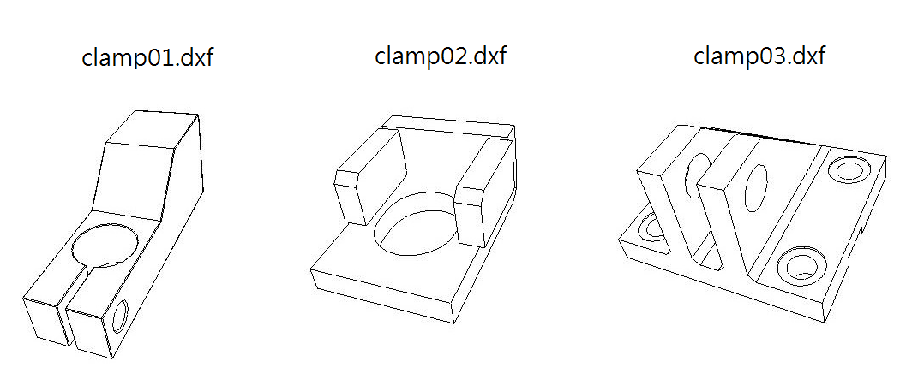
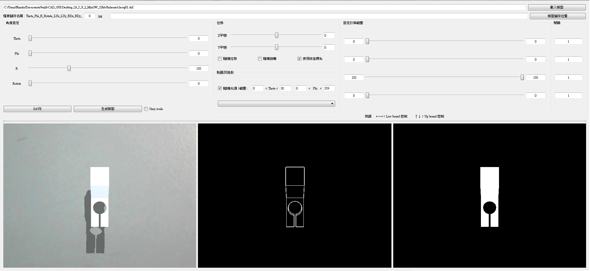

讀取.dxf 檔案格式，產生渲染合成影像作訓練資料使用
[*]Develop in QT5.9
Github Link

# 虛擬相機以球座標系定義
物體於圓心，虛擬相機的位置將由 1) 物體與相機距離 r 2) 天頂角 Theta 3) 方位角 Phi 三個參數來設定

# 整體介面
可變參數
- Theta angle
- Phi angle
- In-plane rotate angle
- Camera shift(x/y direction)
- Light direction
- batch process setting
